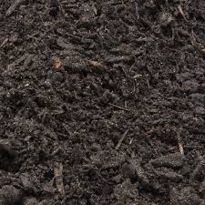
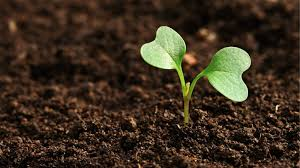

What We Offer

Grow Bags
Portable with air-pruning properties to ensure healthy root growth.

Raised Beds
Space-saving, easy-to-maintain gardening for urban homes.

Vertical Gardens
Compact gardens designed for small urban spaces.

Organic Potting Mix
Nutrient-rich soil for healthy plant growth.

Organic Fertilizers
Natural fertilizers to boost plant health.

Organic Pesticides
Chemical-free pest control for safe and healthy crops.